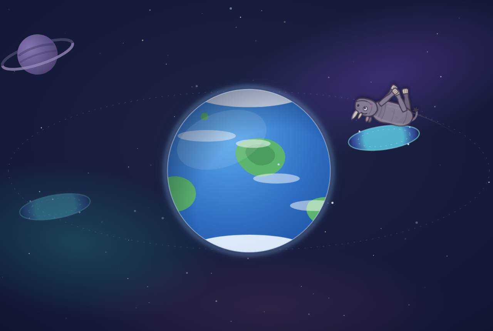
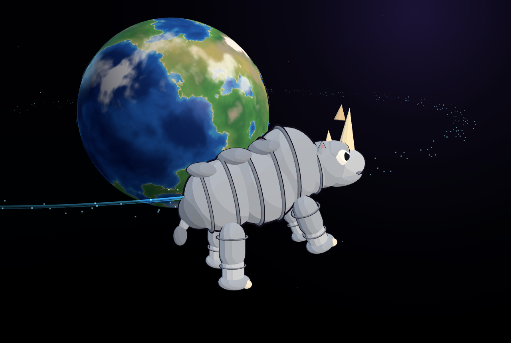
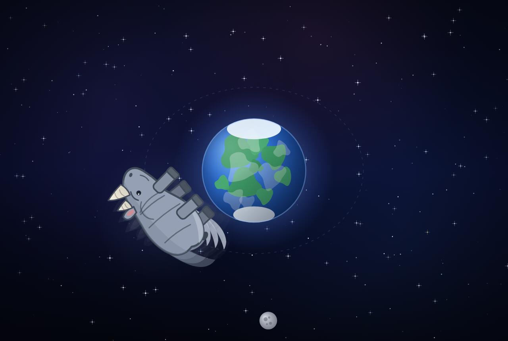
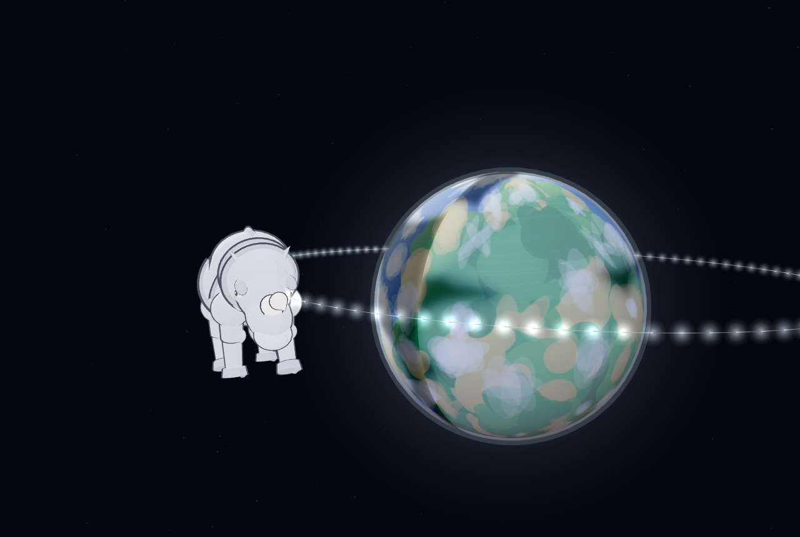
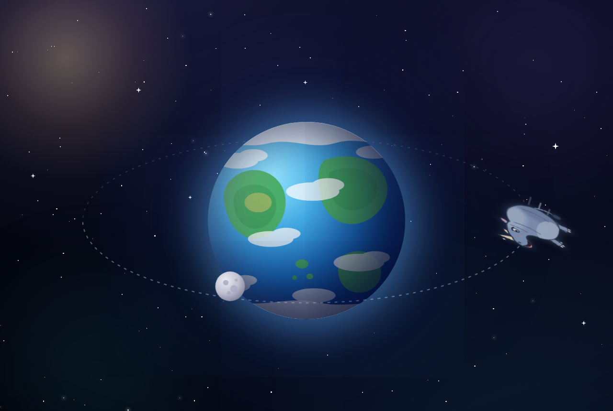
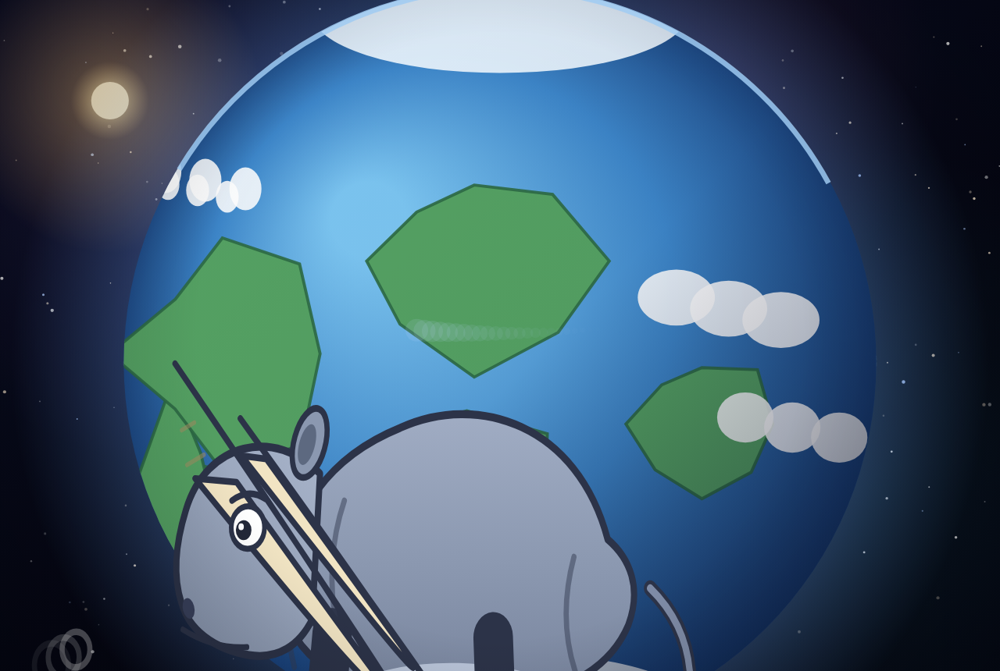

#186Jev

犀牛造型96
轨道运动64
地球质感99
场景氛围92
#284Jev
犀牛造型91
轨道运动66
地球质感96
场景氛围85
#383Jev

犀牛造型90
轨道运动61
地球质感98
场景氛围89
#477Jev
犀牛造型57
轨道运动89
地球质感97
场景氛围73
#577Jev

犀牛造型93
轨道运动63
地球质感71
场景氛围72
#676Jev

犀牛造型82
轨道运动60
地球质感92
场景氛围69
#772Jev

犀牛造型60
轨道运动67
地球质感99
场景氛围76
#871Jev
犀牛造型62
轨道运动86
地球质感72
场景氛围63
#971Jev

犀牛造型78
轨道运动66
地球质感67
场景氛围68
#1061Jev
犀牛造型56
轨道运动64
地球质感66
场景氛围62